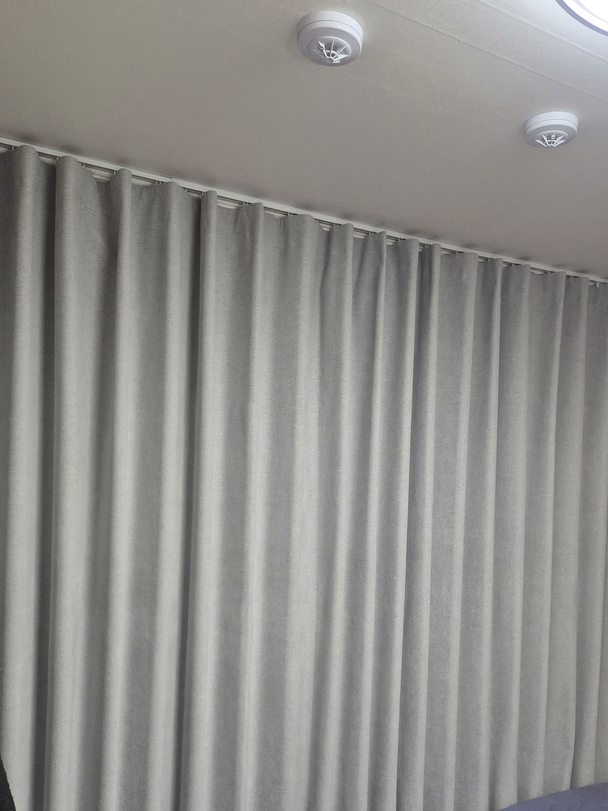
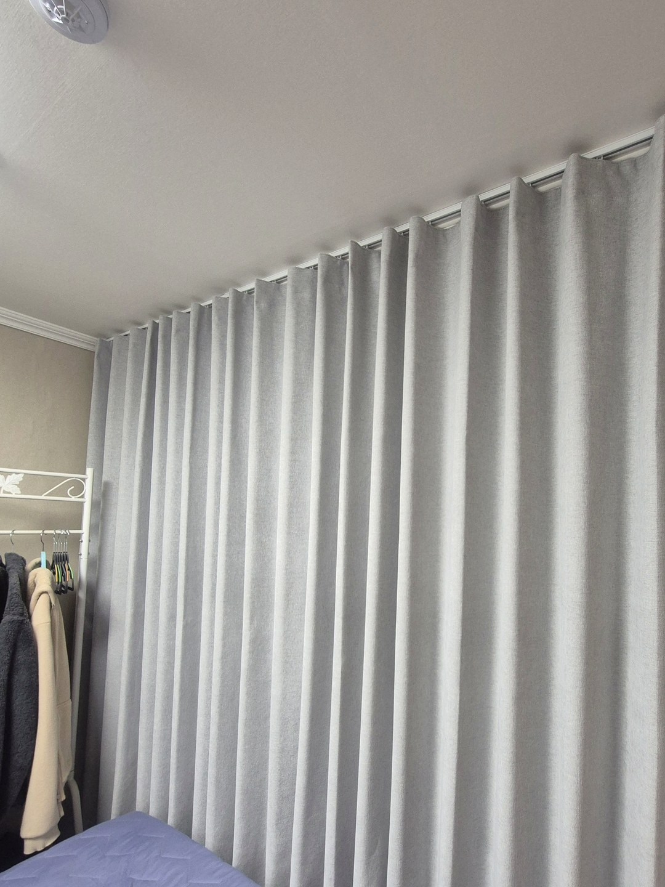

2026년 10월 23일 시공
영덕 주택 침실
우풍 막는 회색 커튼 시공후기

시공 장소는 영덕의 한 주택 침실입니다.
창에는 이미 암막 롤스크린이 달려 있었습니다.
날이 추워지면서 창 쪽 우풍이 심해져, 커튼을 달고 싶다고 요청해 주셨습니다.
커튼 폭을 창이 아니라 벽에 맞춘 이유
롤스크린은 빛은 잘 막지만, 창 크기만큼만 내려오는 한 장짜리 원단입니다.
찬 공기는 유리보다 창틀 둘레에서 더 많이 들어오기 때문에, 창만 덮어서는 그 둘레가 그대로 남습니다.
그래서 레일을 천장 몰딩 바로 아래에 길게 달고, 커튼이 창 양옆의 벽까지 넉넉하게 덮도록 폭을 잡았습니다.

길이는 바닥 가까이까지
아래쪽이 짧게 뜨면 그 틈으로 찬 공기가 방 안으로 흘러 들어옵니다.
이번 커튼은 바닥 가까이까지 내려오게 맞춰, 창 앞에 원단 한 겹의 벽이 생기도록 했습니다.
색은 벽지와 어울리는 회색으로 골라 침실이 차분하게 정리되었습니다.

설치 후 알아 두실 점
커튼은 창 앞의 찬 기운을 줄여 주지만 창틀의 틈 자체를 메우지는 못합니다. 실리콘이 갈라졌거나 문풍지가 낡았다면 함께 손보셔야 효과가 큽니다. 낮에도 계속 닫아 두면 유리 쪽에 물방울이 맺힐 수 있으니 해 드는 시간에는 잠시 열어 환기해 주세요.
상담 전에 준비해 주시면 좋은 것
창이 있는 벽 전체가 나오게 한 장, 천장과 창 사이가 보이게 한 장 찍어 보내 주세요.
레일을 어디까지 뺄 수 있는지 미리 보고 대략적인 견적을 안내해 드립니다.